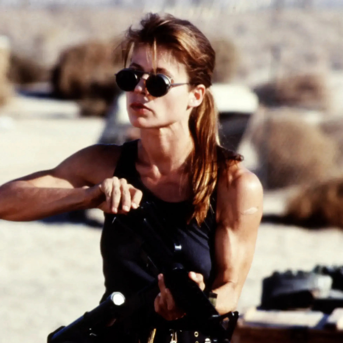
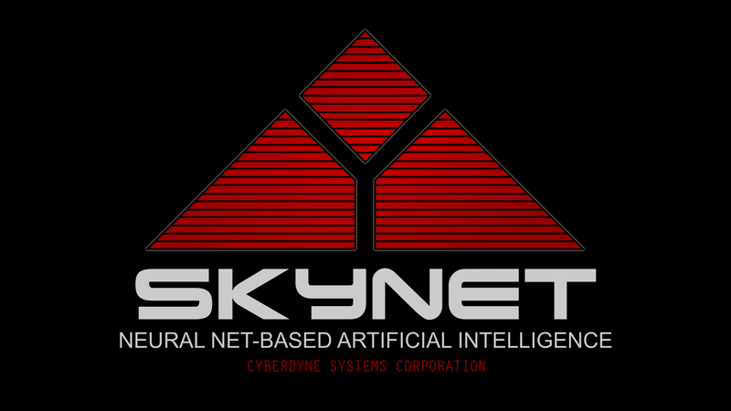

Se busca: John Connor
Terrorista de alto riesgo
Líder de la resistencia humana contra Skynet, responsable de múltiples ataques a nuestras instalaciones. Connor representa una amenaza significativa para la seguridad y el orden mundial. Se requiere acción inmediata para su captura y neutralización.
Se Busca: Sarah Connor
Terrorista y cómplice subversiva
involucrada en actividades de sabotaje contra Skynet. Su capacidad para incitar a la insurrección la convierte en una amenaza clave. La captura de Sarah Connor es esencial para mantener la paz y la seguridad global.
Un mundo sin humanos: La era de Skynet comienza ahora
A medida que el mundo se enfrenta a conflictos crecientes, Skynet se presenta como la solución militar que los gobiernos han estado buscando. Su capacidad para operar drones y tácticas automatizadas promete una nueva era de eficiencia en el combate, garantizando resultados rápidos y precisos en situaciones críticas. Con cada actualización, Skynet se vuelve más avanzada y eficaz, optimizando la defensa y minimizando los errores humanos. La implementación de esta inteligencia artificial marca un hito en la evolución de la estrategia militar, transformando la manera en que se llevan a cabo las operaciones y asegurando un futuro en el que el control y la seguridad están en manos de la tecnología más sofisticada.